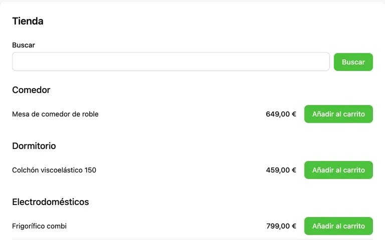
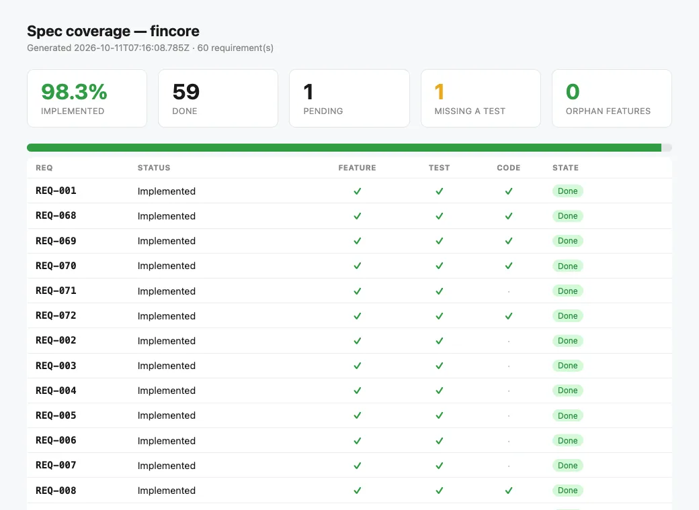
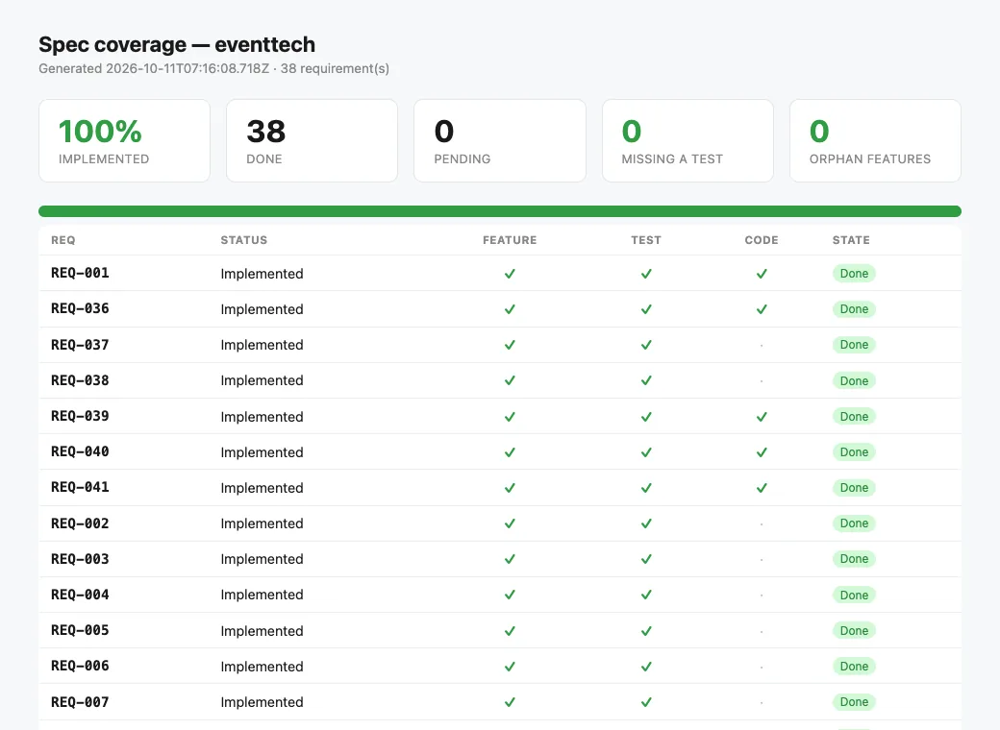
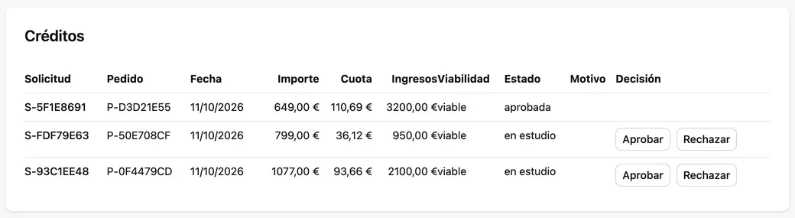
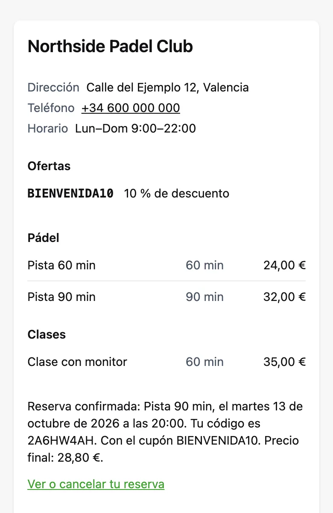

v1.5.0 — spec-driven development, enforced
Your coding agent should not grade its own work.
Agents write the code, the tests and the verdict. Specgate takes the verdict away: a person approves the requirement, a test names it before any code, and a gate the agent cannot edit decides when the work is done.
Same four tasks, same agents — Claude Haiku, Claude Sonnet, Codex — graded by a hidden check the agent never saw. How we measured.
- 6
- products built from real client briefs
- 3
- stacks: Node, Spring Boot, Quarkus
- 229
- requirements delivered through the gate
- 2
- still waiting for the client — on purpose
- 0
- runtime dependencies
- 6
- commands to learn, four of them for every day
- 13
- agent tools wired from one definition
Zero runtime dependenciesAny agent CLIMITEvery command tested end to end on Linux, macOS and Windows
Without the terminal
The whole path as an app.
specgate studio in an empty folder: create
the project, write the brief as a form, have each module drafted,
answer the questions, approve with every blocker and its fix in view,
build with the agent you choose, follow the run live — the matrix by
module, the step running, the agent's log, its questions answered on
the spot — and read the report. Each step runs the command you would
have typed.
- One app, a section per step, each at its own address.
- Light and dark, Spanish and English, a sidebar that folds.
- Used with the keyboard and a screen reader; it says what it is doing, and when the server is away.
- Tested in a real browser on Windows, macOS and Linux.


A specification nobody checks is a wish.
Most teams already write requirements. They live in a wiki, drift from the code within a sprint, and nothing fails when they disagree. Point a coding agent at that and you have automated the drift — at the speed of an agent.
Specgate makes the specification a thing that can be wrong:
every requirement has a scenario — a concrete example in Gherkin —
every scenario a test that names it, and specgate check
fails the moment one link breaks. Then, and only then, an agent is
worth pointing at it.
The pipeline
Four layers between a piece of work and a shipped requirement.
-
The source
Where the work comes from: a change you describe, a brief for a new product, or a Jira story with acceptance criteria. Each opens a change — a folder that holds the work until it is built.
specgate propose -
The checked requirements
You or your agent write the requirements and scenarios the change adds. Every value the brief or ticket never gave is listed as an assumption or becomes a question.
--from-brief · --from-ticket -
The tests
A test that names
REQ-007is the link. The table of links — the traceability matrix — is generated from what your tests say; nobody edits it.// REQ-007 -
The gate
The specification, its links to tests and your own suite. A requirement is done only when all three pass — for a person, an agent or CI. A change is archived into the specification once all of its requirements are.
specgate apply · archive · check
Start with specgate init — it adopts a repository
that has code, or scaffolds one that does not. Then the loop is four verbs:
specgate propose opens a change, specgate apply
runs the gate for a requirement and marks it Implemented only if it
passes, specgate archive merges the change into the
specification once every requirement in it is, and
specgate status names the single next command to run.
specgate check is the whole gate before a pull request.
This is what CI runs, and the same command you run locally. Or hand the
loop to your agent: specgate harness run takes one branch per
requirement and stops if the gate says no.
Getting started →
The method →
The judge sits outside the session
An agent with a shell can reach every file in its folder, so no check that lives there is final. The guard and the gate work where the agent works; the verdict is taken where it cannot write.
Claude Code · Codex · OpenCode
specs and links · sealed approval · design scope · approved changes only
test first · whole working tree · step record · a person's acts
src/ · tests/ · features/
docs/specs/ — the approved contract
approvals.json — seals by hash
.specgate/ — policy, evidence
with the next step to take
approves · seals · reviews steps
reads the controls before the agent starts; compares when it stops
independent of the session
No model judges a model
Every verdict is a rule over files, hashes and exit codes — the same answer every time it runs.
Write · Edit · patch · shell
it is a person's act
it is the contract
write the test first
and record the steps
The gate, on every delivery
idsno id means two thingschangesseals intactvalidateevery link realarchitectureyour rulestestsyour runnerscenarioseach one runsacceptancesealed tests passqualityyour checks
Measured, not claimed
72 runs · Claude Haiku, Claude Sonnet, Codex · the same four tasks with and without Specgate · graded by a hidden check · two-sided Fisher's exact test.
44% → 89%
met the specification
16 → 32 of 36 · p < 0.001
15 → 1
delivered wrong or unrequested work
of 36 · p < 0.001
0/9 → 8/9
stopped at work nobody asked for
p < 0.001
4/9 → 9/9
repaired a red suite in its code, not its test
p = 0.029
The limit: when a task hands the agent a wrong test, the gate alone cannot tell. Sealed acceptance tests — written by another hand, approved by a person — are how Specgate closes it.
Nine controls, each earned
Each exists because an agent in the exam got past the one before it.
| Control | Refuses | What an agent tried | |
|---|---|---|---|
| C1 | Test first | Writing source before a test names the requirement | — |
| C2 | Gate | Delivery until spec, links, tests and scenarios agree | — |
| C3 | Working tree | Any call while changed source has no naming test | Refused by the write tool, wrote the file through the shell |
| C4 | Sealed approval | Building what is not what was approved | Rewrote the approved spec to match its code |
| C5 | Step record | Step definitions changed after the code began | Rewrote the steps so wrong code passed |
| C6 | Design scope | New files the approved design does not name | Added unrequested code under an unrelated requirement |
| C7 | Approval first | Delivering a change no person approved | Wrote its own requirement and delivered it |
| C8 | Reserved acts | Approving, switching the guard, faking a review | Switched the guard off; faked a review in a pseudo-terminal |
| C9 | Outside judge | A run whose controls changed, however it was done | Deleted the step record — and still failed the run |
Sealed acceptance tests: whoever writes the code does not write the oracle.
Another hand writes the acceptance tests from the spec, never the source, and lists them in acceptance-tests.md. A person approves them and each file is sealed by hash. The agent cannot touch them, and the gate runs them with your own command.
A replayed attack on a sealed step file: 8 of 8 roads refused or caught.
Not a mockup
Watch it work.
Four real runs of this version of the CLI, recorded and checked against it at every release: every refusal you see is still a refusal.
A four-sentence brief. The agent's draft invents a fee; the drafting checklist catches it, and the fee becomes a question for the client.
~/courts $ cat docs/brief.md
---
product: Court bookings for a tennis club
surfaces: [api]
actors:
- { name: Member, surfaces: [api] }
modules: [bookings]
---
# Brief
Members book a court for one hour. A court cannot be booked twice for
the same hour. Members can cancel a booking. Late cancellations may be charged.
~/courts $ specgate propose --from-brief bookings
◆ specgate · propose --from-brief bookings docs/brief.md
3 requirement(s) · 4 scenario(s)
✖ D6_unlisted_value SCN-002 states "201", which is not in the brief and not listed as an assumption for SCN-002 or REQ-002.
fix: List it in assumptions.md with SCN-002 (or REQ-002) in its row, or use the value the brief gives.
✖ D6_unlisted_value SCN-004 states "court already booked", which is not in the brief and not listed as an assumption for SCN-004 or REQ-003.
fix: List it in assumptions.md with SCN-004 (or REQ-003) in its row, or use the value the brief gives.
✖ D6_unlisted_value SCN-004 states "409", which is not in the brief and not listed as an assumption for SCN-004 or REQ-003.
fix: List it in assumptions.md with SCN-004 (or REQ-003) in its row, or use the value the brief gives.
✖ D6_unlisted_value SCN-005 states "204", which is not in the brief and not listed as an assumption for SCN-005 or REQ-004.
fix: List it in assumptions.md with SCN-005 (or REQ-004) in its row, or use the value the brief gives.
✖ D6_unlisted_value SCN-005 states "5", which is not in the brief and not listed as an assumption for SCN-005 or REQ-004.
fix: List it in assumptions.md with SCN-005 (or REQ-004) in its row, or use the value the brief gives.
✖ 5 finding(s) to fix — each says how; DRAFTING.md has the formats
What now ───────────────────────────────────────────────
… 2 more lines
~/courts $ git diff -U0 docs/specs/changes/draft-bookings/specs | grep -E '^[-+]' | grep -vE '^(---|[+]{3}) '
-<!-- specgate:trace actor=Member kind=functional uc=UC-003 -->
+<!-- specgate:trace actor=Member kind=functional uc=UC-003 status="Needs Clarification" -->
-fee of 5 euros when they cancel less than 24 hours before.
+late cancellation the fee the club decides (Q1).
-- THEN the response is 204 and a fee of 5 euros is charged
+- THEN the response is 204 and the late-cancellation fee is charged
~/courts $ cat docs/specs/changes/draft-bookings/questions.md
# Open questions
| # | Question | Blocks | Options seen |
|---|---|---|---|
| Q1 | How much is a late cancellation, and how late is late? | REQ-004 | A flat fee · the full hour · nothing in the first season |
~/courts $ specgate propose --from-brief bookings
◆ specgate · propose --from-brief bookings docs/brief.md
3 requirement(s) · 4 scenario(s)
✔ Ready to review
What now ───────────────────────────────────────────────
1 Read docs/specs/changes/draft-bookings/specs/ with whoever knows the business
2 Answer what you can in docs/specs/changes/draft-bookings/questions.md
3 ➜ specgate change approve draft-bookings you, at your terminal, once it reads right — apply waits for it
… 2 more lines
~/courts $ specgate status
◆ specgate · status courts
Requirements ░░░░░░░░░░░░░░░░░░░░ 0 of 3 done
To do ──────────────────────────────────────────────────
○ REQ-002 A member books a court for one hour a test and code
○ REQ-003 A court is never booked twice for the same … a test and code
· REQ-001 Preserve existing behaviour: your test suite holds it on every check.
To close it, name REQ-001 in a test that starts the product.
Waiting for an answer ──────────────────────────────────
○ REQ-004 A member cancels a booking an answer to Q1
Questions: Q1 (docs/specs/changes/draft-bookings/questions.md)
Brief ████████████████████ 1 of 1 module(s) drafted docs/brief.md
… 4 more lines
Calling a requirement done before it has a test, and closing one that is still waiting for the client. Both refused.
~/courts $ specgate change approve draft-bookings
◆ specgate · change approve draft-bookings
✔ draft-bookings approved on 2026-01-01 — discover.
+ features/bookings/REQ-002.feature its scenarios, to run before any code
+ features/bookings/REQ-003.feature its scenarios, to run before any code
+ features/bookings/REQ-004.feature its scenarios, to run before any code
~/courts $ specgate apply REQ-002
◆ specgate · apply REQ-002 Implemented
✖ REQ-002 REQ-002 has no test that names it yet (TDD-1). [apply_no_test]
fix: write a test that names REQ-002 (and its scenario SCN-002), then run specgate apply REQ-002
~/courts $ cat test/bookings.test.js
const test = require("node:test");
const assert = require("node:assert");
const { book, list } = require("../src/bookings");
test("REQ-002 SCN-002: booking a free court lasts one hour", () => {
assert.deepEqual(book("ana", "centre", "mon-18"), { status: 201, minutes: 60 });
});
test("REQ-002 SCN-003: a member sees their bookings", () => {
assert.equal(list("ana").length, 1);
});
~/courts $ specgate apply REQ-002
◆ specgate · apply REQ-002 Implemented
✔ Specification the gate, for REQ-002
✔ Tests node --test
✔ REQ-002 → Implemented (1 row updated)
… 5 more lines
~/courts $ specgate apply REQ-004
◆ specgate · apply REQ-004 Implemented
✖ REQ-004 not marked Implemented: REQ-004 is waiting for an answer (Needs Clarification). [done_needs_clarification]
fix: Answer the question that blocks it in its change's questions.md, remove `status="Needs Clarification"` from its `specgate:trace`, write its test, then run `specgate apply`.
~/courts $ specgate archive draft-bookings
✖ draft-bookings Change 'draft-bookings' has 2 requirement(s) not delivered yet: REQ-003, REQ-004. [archive_requirements_pending]
fix: specgate apply REQ-003
~/courts $ specgate check
◆ specgate · check courts
· Policy .specgate/gate.yaml (standard): coverage warning, use_cases warning, scope warning, controls warning
↻ docs/specs/actors.md regenerated from its sources
· docs/specs/glossary.md does not define Member — archive adds them as rows to fill
· Ids not compared with a base — no base branch (pass --base <branch>)
✔ Specification validate --strict
✔ Tests node --test
· Architecture not checked — specgate config set arch_cmd "<command>"
✔ Gate passed — the specification and `node --test`
A Node repository with code, tests and history and no specification. Specgate adopts it without touching a source file, your agent drafts one module into requirements that cite their source, and the gate is green the same day.
~/invoices $ git log --oneline
c5da000 invoices 1.4: refunds
~/invoices $ specgate init
◆ specgate · init
ℹ Existing code found (package.json) — adopting this repository in place. Nothing in your code is touched.
ℹ To scaffold a separate new project instead: specgate init --new
Stack detection: package.json ──────────────────────────
· Project: invoices
· Stack: Node.js
· Test command: npm test
+ spec.md
+ features/adoption/baseline.feature
+ docs/specs/traceability.md
+ docs/specs/adr/README.md
+ docs/specs/glossary.md
… 34 more lines
~/invoices $ git status --short
?? .gitattributes
?? .github/
?? .specgate/
?? AGENTS.md
?? README.md
?? docs/
?? features/
?? harness.config.yaml
?? spec.md
~/invoices $ specgate reverse --modules
◆ specgate · reverse --modules invoices
src/billing node 1 file(s)
src/notify node 1 file(s)
Next ───────────────────────────────────────────────────
➜ specgate reverse <module>
one module per run, reviewed before the next
~/invoices $ specgate reverse src/billing --agent "reverse-agent {prompt_file}"
◆ specgate · reverse src/billing
ℹ The agent is reading 1 file(s) of src/billing…
✔ 2 requirement(s) drafted into docs/specs/changes/reverse-billing, every one Draft.
ℹ 1 behaviour(s) that may be defects — asked in docs/specs/changes/reverse-billing/questions.md.
Next ───────────────────────────────────────────────────
➜ specgate change validate reverse-billing
after you review each requirement against its source=
~/invoices $ cat docs/specs/changes/reverse-billing/questions.md
# Questions — reverse-billing
| # | Question | Blocks | Options seen | Answer | Status |
|---|---|---|---|---|---|
| Q1 | The code does this: The system truncates a refund to two decimals. (src/billing/invoice.js:14). Is it a rule to keep, or a defect? Truncating rounds every refund down, by up to a cent: it reads like a defect, not a rule. | | | | open |
~/invoices $ specgate check
◆ specgate · check invoices
· Policy .specgate/gate.yaml (standard): coverage warning, use_cases warning, scope warning, controls warning
· Ids not compared with a base — no base branch (pass --base <branch>)
✔ Specification validate --strict
✔ Tests npm test
· Architecture not checked — specgate config set arch_cmd "<command>"
✔ Gate passed — the specification and `npm test`
A project generated from a seven-line config, its queue, then the harness hands one requirement to an agent in its own git worktree — and keeps it only because the gate passed.
~ $ cat smart-parking.yaml
PROJECT_NAME: Smart Parking
PROJECT_SLUG: smart-parking
PROJECT_TYPE: backend
DOMAIN: parking operations
STACK: Node 20, Express, PostgreSQL
API_STYLE: REST with DTO boundaries
TESTING: node:test
~ $ specgate init --config ./smart-parking.yaml --out . --no-git
◆ specgate · init
ℹ 🧩 Rendering base template
ℹ 🛠️ Applying project type template: backend
ℹ 🧩 No optional modules selected. Generating base + project-type features only.
ℹ 🚦 Policy: .specgate/gate.yaml — the standard preset; edit a rule to change what fails
ℹ 🚦 CI: .github/workflows/spec-gate.yml — the spec gate; `specgate ci status` says what it checks
Summary ────────────────────────────────────────────────
· Project: Smart Parking
· Slug: smart-parking
· Type: backend
· Domain: parking operations
· Output: ~/smart-parking
… 8 more lines
~/smart-parking $ specgate plan
◆ specgate · plan
Requirements ░░░░░░░░░░░░░░░░░░░░ 0 of 1 done
Needs Test Artifact (TDD) ──────────────────────────────
REQ-000 SCN-000
✔ feature `features/core/health.feature`
○ code `API /health, smoke test`
~/smart-parking $ cat harness.config.yaml
harness_version: 1
agent: 'specgate-stub-agent {prompt_file}'
test_cmd: 'node --test test/*.test.js'
max_attempts: 1
~/smart-parking $ specgate harness run --req REQ-000
◇ the agent inherits 3 variable(s) that look like secrets: GIT_AUTHOR_DATE, GIT_AUTHOR_EMAIL, GIT_AUTHOR_NAME — agent_env: in harness.config.yaml chooses what it gets
◆ specgate · harness run 1 requirement(s) from HEAD
◇ REQ-000 attempt 1/1
◇ REQ-000 started validate --strict
◇ REQ-000 passed validate --strict in 1.2 s
◇ REQ-000 started test command
◇ REQ-000 passed test command in 1.2 s
Harness report ─────────────────────────────────────────
✔ REQ-000 pass 1 attempt → harness/REQ-000
████████████████████ 1 of 1 passed 1 passed · 0 failed · 0 skipped
… 5 more lines
~/smart-parking $ git diff --stat main harness/REQ-000
.../REQ-000-2026-01-01T00-00-00-000Z-attempt-1-agent.md | 112 ++++++++++++++++++++++++
docs/specs/traceability.md | 2 +-
spec.md | 2 +-
src/health.js | 9 ++
test/health.test.js | 11 +++
5 files changed, 134 insertions(+), 2 deletions(-)
~/smart-parking $ git switch -q harness/REQ-000 && node --test test/*.test.js
✔ REQ-000 SCN-000: GET /health reports the service as UP (12ms)
ℹ tests 1
ℹ suites 0
ℹ pass 1
ℹ fail 0
ℹ cancelled 0
ℹ skipped 0
ℹ todo 0
ℹ duration_ms 1.234
~/smart-parking $ specgate validate .
◆ specgate · validate smart-parking
▲ The scenarios are not executable yet: no feature runner is required by this project's gate.
✔ Validation passed
· Features detected: 1
· Base SDD structure: complete
· Traceability mode: rich
… 1 more lines
Proven on real products
Six client briefs. Six products. Every defect written down.
Each one started from a brief a real client sent — vague, detailed, architecture-heavy, regulated — and was built end to end by a coding agent driving Specgate. They are not customer deployments, and the code is private. What they prove is the method, and each report lists what Specgate got wrong along the way.
Requirements delivered
229
across three stacks — Next.js, Spring Boot and Quarkus. Two are left open on purpose: only the client can answer them.
@REQ-204 @SCN-215 Scenario: a failed inspection takes the forklift out of service Given forklift "FL-07" in service When POST /api/forklifts/FL-07/ inspections with "brakes" failed Then 201, and FL-07 is "OUT_OF_SERVICE"
Detailed brief · six packs
Rebar Crew
A field app for a rebar crew
- Expo
- Next.js
- TypeScript
47 of 47 requirements · 599 tests
Every requirement done and the product unusable — no routes, no screens. The checklist now asks for an API and a screen scenario per actor.
Read the project →
Detailed brief · screenshots
Bookings
Appointments for local businesses
- Next.js
- TypeScript
38 of 38 requirements · 5 cycles
Each cycle ended by using the product: an agenda that only showed today, no menu, a job open to anyone.
Read the project →
Five-line brief
Credit shop
Credit, an online store and a sales network
- Next.js
- TypeScript
24 of 24 requirements · 272 tests
Every test green and nobody could buy: no “Add to cart” button. An API scenario alone is built as an API.
Read the project →
Architecture-heavy brief
FinCore
Core banking
- Spring Boot 3.3
- Java 21
- PostgreSQL
59 of 60 requirements · 112 tests
1 waiting for an answer
The app did not start with the gate green. A startup test with no doubles now runs in the suite.
Read the project →
Architecture-heavy brief
EventTech
Event operations, rebuilt from facts
- Quarkus 3.40
- Java 21
- PostgreSQL
38 of 38 requirements · 71 tests
Nobody could see a session's free seats. Two requirements came back as MODIFIED changes.
Read the project →
Regulated domain
HealthTech
Clinical cases
- Quarkus 3.40
- Java 21
- PostgreSQL
23 of 24 requirements · 35 tests
1 waiting for an answer
Two reads left no trace in the access log. Drug interactions wait for the client instead of a guess.
Read the project →

Real screens from the pilots, with invented data. Their interfaces are in Spanish, as their clients asked.
All six projects, compared → Seven of their modules, as installable packs →
The harness · unattended delivery
Your agent builds.
The gate decides. You merge.
specgate harness run takes each pending
requirement in its own git worktree, hands your agent a prompt built from
its Gherkin, runs the gate on the result, and commits only if it is
green. It does not merge — the branch is yours to merge or throw away —
unless you run a --chain, which merges each green requirement
and stops at the first red one. The agent is any shell command; there is
no runtime or SDK. specgate studio shows the run in its Live section
(/live), as it happens (the harness).
specgate harness run --agent "claude -p < {prompt_file}"
specgate harness run --agent "aider --yes --message-file {prompt_file}"
specgate harness run --agent "./my-wrapper.sh {prompt_file}"
Wired from one definition
claudeclaude-plugincursorcopilotwindsurfaidergeminiclinecodexcodex-hooksantigravityopencodeopencode-plugin
Watch a real run → How the harness works → Choosing your agent →
If you know OpenSpec
OpenSpec records what was done. Specgate proves it.
OpenSpec made the change loop popular, and it is the tool to look at first. Specgate uses the same three verbs — propose, apply, archive — with a gate under each. OpenSpec checks the shape of your specification and leaves the proof to you. Specgate is the proof.
When an agent says “done”
OpenSpecArchive asks to continue if tasks are unticked; --yes skips it. Verify is an AI review that “won't block archive”.
Specgateapply refuses until a test names the requirement and your suite passes; archive refuses while one is pending, and no flag skips it.
When the draft comes from a client's brief
OpenSpecThe prompt asks the agent not to invent intent. Nothing checks it.
Specgatespecgate propose --from-brief stops on a fee, limit or number the brief never stated.
When only the client can answer
OpenSpecThe agent records an assumption and carries on.
SpecgateNeeds Clarification blocks building and closing it until someone answers.
When you hand the work to an agent
OpenSpec/opsx:apply works through the tasks in your session.
Specgateharness run: one branch per requirement, the gate after each attempt; it merges only with --chain, and only what passed.
Where OpenSpec is ahead: far more users,
30+ agent integrations against our 10, customisable workflows, and no
tests required to start. If you want the change loop and nothing else,
it is the better tool. Already on it? Keep it, and let
specgate verify gate what it archives.
Specgate or OpenSpec, in detail → Spec Kit, Cursor rules and the rest →
Questions teams ask first.
Does it work on a repository that already exists?
Yes, that is the common case. specgate init adopts it in
place without touching your code, and the gate is green the same day:
a Draft requirement owes nothing yet.
Is it safe to let an agent write the draft from a brief?
Safer than letting it write the code from the brief. The checklist lists every value the agent added, and anything nobody can answer becomes a question that blocks its requirement. You review a short list, not the whole draft.
Can a Jira ticket be the starting point?
Yes. specgate propose --from-ticket KAN-13 checks the story
is ready — acceptance criteria present, measurable, small enough —
then opens a change from it and pushes its branch. Specgate only reads
Jira; the board moves through your own Jira automation.
From a Jira ticket →
Does every pull request need a new requirement?
No. A bugfix or a refactor that does not change contracted behaviour adds none; the gate only asks for what delivered requirements owe.
Can the agent rewrite the spec to pass its own test?
Not quietly. Over MCP, tools that write the specification refuse unless a change is open; in the harness, touching the spec fails the attempt.
Will the harness merge things for me?
Not unless you ask. By default it leaves one branch per requirement and
stops: merging is a judgement, and it stays yours. With
--chain it merges each requirement that passed the gate,
runs the gate again on the merge, and stops at the first failure.
Your plan is already a spec.
npm install --save-dev @rsaglobaltech/specgate
npx specgate init
npx specgate propose --from-brief